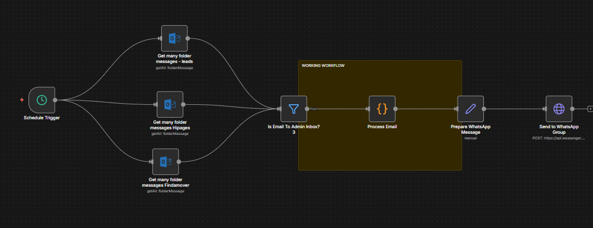

Project 01 — live system
Three inboxes in.
One WhatsApp alert out.
Automated lead-alert system for Emma Glober Movers, a moving company. It routes incoming job leads from multiple email inboxes straight to the team's WhatsApp group in real time — no manual checking or forwarding required.

PROBLEM
Emma Glober Movers received job leads across three separate channels — direct leads, Hipages, and Findamover — all landing in different Outlook inboxes. The owner was the single point of contact: every lead depended on him manually checking each inbox, identifying genuine job enquiries, and forwarding them to his team via WhatsApp. That created delays, missed leads when he was busy or unavailable, and slower response times on jobs where speed to first contact directly decides whether the customer books with them or a competitor.
PROCESS
Mapped the three inboxes and the owner's triage judgement first, then rebuilt it as a scheduled n8n workflow: parallel Outlook polls → enquiry filter → parse and reformat with custom JavaScript → automatic Wassenger send to the team group. Retries and an error channel included, so a failed send pages instead of vanishing.
SOLUTION
1. Poll in parallel. The workflow runs on a schedule and checks all three Outlook inboxes — Leads, Hipages, Findamover — for new messages at the same time.
2. Filter for genuine enquiries. Incoming emails are checked to confirm they're real lead/admin enquiries before anything is processed — noise never reaches the team.
3. Reformat for WhatsApp. Each qualifying email is parsed and rebuilt into a clean, readable message — sender, source, job details — via custom JavaScript formatting.
4. Send automatically. The formatted message goes straight to the team's WhatsApp group through the Wassenger API. No human step in between — the system runs continuously in the background, so every qualifying lead lands the moment it arrives, whether or not the owner is free.